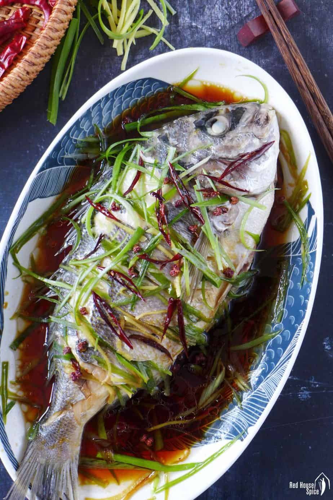

清蒸鱼

这盘菜是清蒸鱼，很有名的中文食物。味道又香又嫩，你需要尝一口，很好吃！
Ingredients
- 1 whole fish
- 2 stalk scallions
- 1 small piece of ginger
- 1&1/2 tablespoon cooking oil
- 1 dried chili
- 3 tablespoons light soy sauce
- 1 tablespoon shaoxing rice wine
- 1/2 teaspoon sugar
- 1 pinch ground white pepper
Instructions
- Wash the fish thoroughly then pat dry with kitchen paper. Cut
the fish at a 45-degree angle several times on each side. Lay it
onto a plate that fits in the wok/pot which you’ll use to
steam.
- Put ⅓ of the scallions and ginger into the cavity of the fish. S
catter the rest under and over the fish.
- Place a steamer rack (or a small bowl) in the middle of a wok.
Add water to the pot (lower than the rack/bowl) and bring it
to a full boil.
- Put the fish plate on top of the rack (bowl). Cover the wok
with a lid. Steam over high heat for 8 minutes (add 2 more
minutes if your fish is larger).
- Take out the plate (use oven gloves to avoid burning). Carefully remove the cloudy liquid.
- Heat up oil, dried chili and Sichuan pepper in a small pan over low heat. As soon as the oil starts to smoke, pour it over the fish (you may either pour the spices onto the fish or discard them).
- Add light soy sauce, Shaoxing rice wine, sugar and white pepper to the same pan. Heat up until it bubbles. Pour over the fish.
- Serve immediately with plain rice (Don’t forget to dip the flesh into the sauce for best flavour).